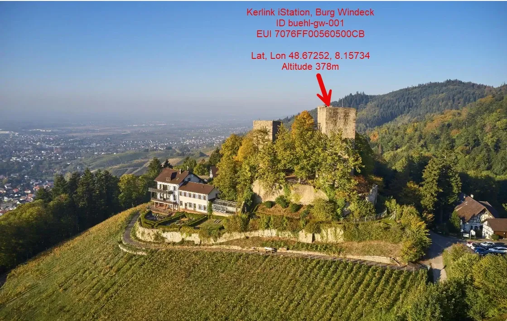
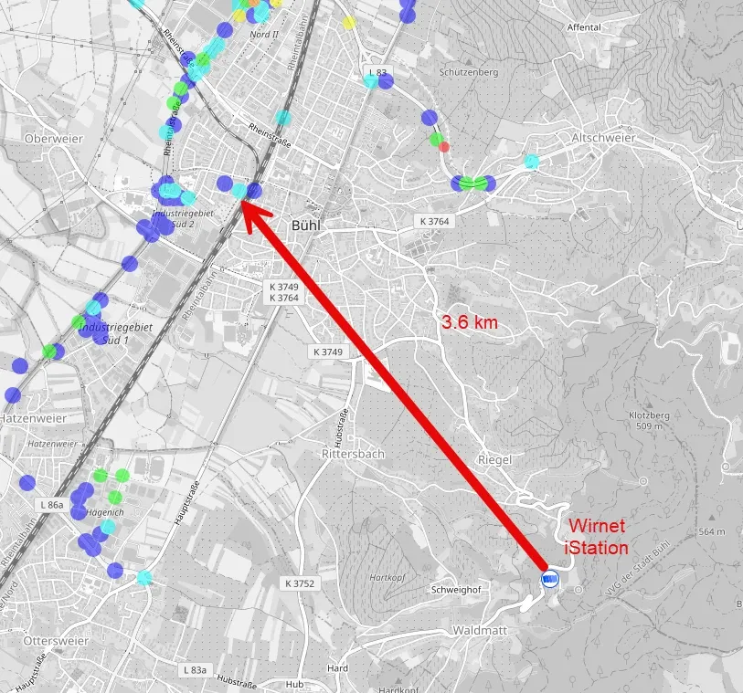
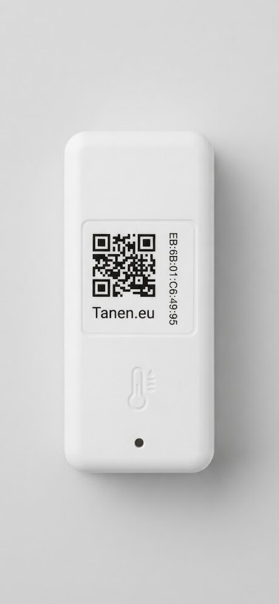

Seeed Studio
Seeed Studio features TanenBase in its monthly wrap-up for July 2026: “Edge AI Beyond the Blueprint”.
Read the Seeed Studio postTanenBase weighs the hive, measures its temperature and sends the readings to you by radio.
One set of batteries lasts for years. No subscription, no fees, no manufacturer who can switch your device off one day.
Apache License 2.0 — free to use, commercially as well. Questions to info@tanen.eu

TanenBase is an open source hive scale: the firmware, the carrier board and the bill of materials are all published, and you can build, change and run the device without anyone’s permission. It sits under a single hive, weighs it, measures its temperature and sends the readings by radio, then goes back to sleep at about 4 µA. Three AAA lithium cells last roughly four and a half years on the calculated budget.
As a LoRaWAN hive scale it needs no mobile contract, and no receiver of your own where a public gateway is in range. It joins The Things Network (TTN) over OTAA on EU868 and sends an 8-byte uplink with weight, temperature, battery voltage and status flags. A payload formatter from the repository decodes it on TTN, and a webhook passes the readings on to BEEP or beelogger, two free beehive monitoring platforms that draw the curves and keep your history. The radio only transmits when weight or temperature has changed noticeably, or when a regular heartbeat is due.
Many DIY hive scales are built on an Arduino or an ESP32. TanenBase uses neither: it runs on a Nordic nRF54LM20A on a Seeed Studio XIAO module, with Zephyr from the nRF Connect SDK. A 24-bit NAU7802 reads the load cell, and the firmware corrects the weight for temperature — in a six-day outdoor test against a known weight, the scatter dropped from 63 g to about 12 g. With the optional Extended Mode, up to three Bluetooth sensors add temperature and humidity from inside the hive and outside it.
Everything is released under the Apache-2.0 licence, commercial use included. Setup and calibration happen over Bluetooth from a web page in Chrome or Edge, so there is no app to install. The repository holds the source code, the KiCad files and gerbers, a BOM with suppliers, and the measurement data behind the temperature correction.
Not renderings — photographs of the very equipment the numbers on this page were measured on.


A TanenBase under a hive in Bühl. The station talks LoRaWAN to a gateway on Windeck Castle, about 4 km away, and sends a reading every hour.



Weight and temperature of this hive, public on beelogger and BEEP.
The Bühl beekeepers’ association was one of the first to put TanenBase to work, taking the project out of the workshop and into the apiary.
A colony at the edge of the fields in Wintersdorf stands on a TanenBase hive scale built on the Steinberg SBS-PF-150 weighing platform. The station talks to the re@di gateway in the village centre, about one kilometre away.


Weight and temperature of this hive, public on beelogger and BEEP.
Bühl and Wintersdorf transmit over the LoRaWAN network of re@di, the alliance of the towns Baden-Baden, Bretten, Bruchsal, Bühl, Ettlingen, Gaggenau, Rastatt, Rheinstetten and Stutensee. The gateways are open to everyone — no receiver of your own, no mobile contract.
Seeed Studio features TanenBase in its monthly wrap-up for July 2026: “Edge AI Beyond the Blueprint”.
Read the Seeed Studio postThe TanenBase project presentation on LinkedIn.
View the post on LinkedInThree things, done properly: last a long time, measure honestly, transmit without anyone else’s permission.
Between two measurements the device is practically off. The transmitter is powered up only when there is genuinely something to report — not by the clock, but when weight or temperature has clearly changed.
Every scale reacts to heat: afternoon sun, a cool night — and suddenly it shows a kilo of nectar that was never there. TanenBase measures the temperature as well and takes that error back out.
Readings go out over LoRaWAN — a radio system for small amounts of data over long distances, with no mobile contract. You either put up your own receiver or use an open network such as The Things Network.
Up to three small Bluetooth sensors measure temperature and humidity where it matters: two inside the hive, one outside. The station reads them and sends their values together with the weight — no cable into the hive and no extra receiver for the sensors.
Temperature and humidity in the brood nest show what the scale alone cannot: whether the colony is raising brood, whether it holds its winter cluster, and whether moisture is building up.

The scale transmits over The Things Network. From there the readings go to a free, open analysis platform that draws them as curves and keeps your history. Two are wired up and proven in the field — nothing to program.
Open platform from the Netherlands. Weight, temperature and battery as curves, plus a digital hive log for every colony. Create an account, enter the device number from the sticker — that is all it takes.
Beekeeping project from Germany with its own community server. Your station reports the same readings there; one account carries every scale at the apiary instead of a sign-up per device.
Both platforms receive the same radio message — nothing to change on the scale. Use one, both in parallel, or pull the readings onto your own server without asking us.
You can buy a hive scale. Most of them, though, lead into the same four dead ends — and those have nothing to do with bees and everything to do with the business model.
A ready-made hive scale costs several hundred euros depending on the supplier — and the same again for every further colony. What you pay for is not the load cell, which is an inexpensive industrial part, but the closed system built around it.
Many devices only work with an active contract. When the contract ends the scale falls silent and the old records are out of reach — even though the device stands on your land and belongs to you.
If the supplier shuts the service down or leaves the market, perfectly good hardware becomes electronic waste. Nobody but the manufacturer can renew the software, because nobody else has ever seen it.
Transmitting every hour whether anything changed or not means a new battery every season, or a solar panel and its bracket. Both are trips to the apiary you would otherwise not have to make.
Standard parts instead of custom ones, no contract, nothing locked away — and a device that sleeps almost all the time.
For those who want the detail. For everyday use you need to understand none of it.
| Readings | weight, in-hive temperature, battery voltage |
|---|---|
| Bluetooth sensors (optional) | up to 3 × SwitchBot Outdoor Meter: temperature and humidity, 2 inside the hive, 1 outside |
| Weighing range | up to 999 kg |
| Field-test accuracy | about 12 g of scatter over six days |
| Radio | LoRaWAN Class A, EU868, OTAA |
| Data packet | 8 bytes per report, plus 5 per Bluetooth sensor |
| Setup | Bluetooth, control page in the browser (Chrome or Edge) |
| Sleep current | about 4 µA |
| Battery | three AAA lithium cells in series (1.5 V, 1200 mAh) |
| Service life (calculated) | about 4.5 years — measuring every 15 min, reporting every 2 h; about 10 years measuring hourly and reporting every 4 h; with Bluetooth sensors about 3.3 and 7 years |
| Processor | Nordic nRF54LM20A, Zephyr / nRF Connect SDK |
| Licence | Apache License 2.0 |
Open here does not mean a datasheet is available for download. It means you get everything needed to build, verify, change and pass on the device yourself.
Firmware, schematic, board files, assembly guide and the complete measurement series behind the temperature correction — including the places where the hardware comes off badly. Anyone who wants to check whether the numbers hold up can do so.
The enclosure opens, the battery is an ordinary cell, the parts can be bought individually. A swap takes a screwdriver and occasionally a soldering iron, not a return shipment.
The station sends to the receiver or the network you enter. There is no middleman reading along, and no service whose survival decides the fate of your records.
The Apache License 2.0 lets anyone use, modify and pass on TanenBase — commercially too, without a fee and without asking permission. Improvements from beekeepers flow back into the project.

TanenBase is certified open source hardware by the Open Source Hardware Association (OSHWA), UID DE000178. The certification confirms that the hardware design, the software and the documentation are open and can be rebuilt.
TanenBase is licensed under Apache-2.0: you may use, modify and redistribute it, and commercial use is allowed — no fee, no permission to ask for.
The source code and build guide on GitHub cover the firmware, the KiCad carrier board with its gerbers, the bill of materials, the TTN payload formatter and the Bluetooth setup page. The hardware:
Tanen_Base_pcb/It measures hive weight and the temperature inside the hive; with the optional Bluetooth sensors it adds inside and outside temperature and humidity, and every report carries the battery voltage.
Whether you want to build a station, are unsure about the parts, or would like to use the project in your beekeeping association — an email is enough. We answer in German, English and Arabic.
info@tanen.eu